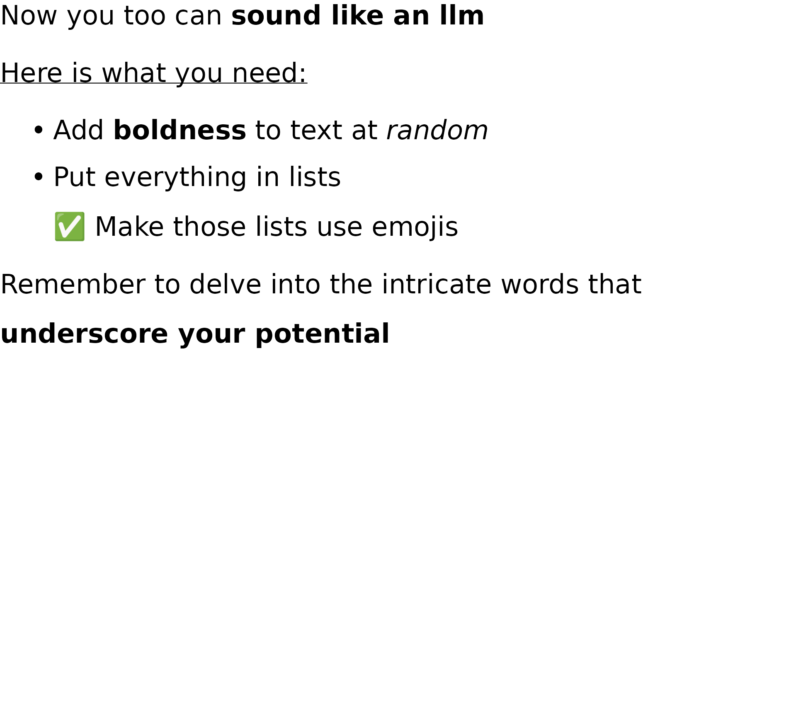
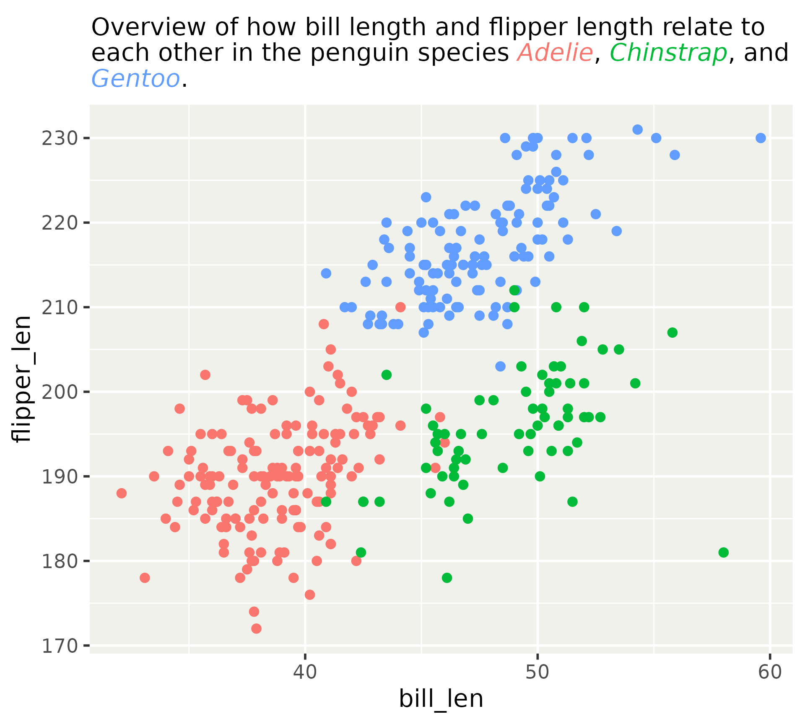

Text rendering and font use
Thomas Lin Pedersen
Key takeaway today:
Text rendering is hard (for Thomas), but doesn’t have to be (for me)
Today
- Selecting the right typeface
- The systemfonts package and why graphics devices matters
- How it just works
- Using web fonts
- Apply rich formatting
- The marquee package
- marquee-flavoured markdown
- Using it in ggplot2
Selecting the right typeface
Warning: Removed 2 rows containing missing values or values outside the scale range
(`geom_point()`).Warning in grid.Call(C_stringMetric, as.graphicsAnnot(x$label)): font family
'FANCY FONT' not found in PostScript font database
Warning in grid.Call(C_stringMetric, as.graphicsAnnot(x$label)): font family
'FANCY FONT' not found in PostScript font database
Warning in grid.Call(C_stringMetric, as.graphicsAnnot(x$label)): font family
'FANCY FONT' not found in PostScript font database
Warning in grid.Call(C_stringMetric, as.graphicsAnnot(x$label)): font family
'FANCY FONT' not found in PostScript font database
Warning in grid.Call(C_stringMetric, as.graphicsAnnot(x$label)): font family
'FANCY FONT' not found in PostScript font database
Warning in grid.Call(C_stringMetric, as.graphicsAnnot(x$label)): font family
'FANCY FONT' not found in PostScript font database
Warning in grid.Call(C_stringMetric, as.graphicsAnnot(x$label)): font family
'FANCY FONT' not found in PostScript font database
Warning in grid.Call(C_stringMetric, as.graphicsAnnot(x$label)): font family
'FANCY FONT' not found in PostScript font database
Warning in grid.Call(C_stringMetric, as.graphicsAnnot(x$label)): font family
'FANCY FONT' not found in PostScript font database
Warning in grid.Call(C_stringMetric, as.graphicsAnnot(x$label)): font family
'FANCY FONT' not found in PostScript font database
Warning in grid.Call(C_stringMetric, as.graphicsAnnot(x$label)): font family
'FANCY FONT' not found in PostScript font database
Warning in grid.Call(C_stringMetric, as.graphicsAnnot(x$label)): font family
'FANCY FONT' not found in PostScript font database
Warning in grid.Call(C_stringMetric, as.graphicsAnnot(x$label)): font family
'FANCY FONT' not found in PostScript font database
Warning in grid.Call(C_stringMetric, as.graphicsAnnot(x$label)): font family
'FANCY FONT' not found in PostScript font databaseWarning in grid.Call(C_textBounds, as.graphicsAnnot(x$label), x$x, x$y, : font
family 'FANCY FONT' not found in PostScript font database
Warning in grid.Call(C_textBounds, as.graphicsAnnot(x$label), x$x, x$y, : font
family 'FANCY FONT' not found in PostScript font database
Warning in grid.Call(C_textBounds, as.graphicsAnnot(x$label), x$x, x$y, : font
family 'FANCY FONT' not found in PostScript font database
Warning in grid.Call(C_textBounds, as.graphicsAnnot(x$label), x$x, x$y, : font
family 'FANCY FONT' not found in PostScript font database
Warning in grid.Call(C_textBounds, as.graphicsAnnot(x$label), x$x, x$y, : font
family 'FANCY FONT' not found in PostScript font database
Warning in grid.Call(C_textBounds, as.graphicsAnnot(x$label), x$x, x$y, : font
family 'FANCY FONT' not found in PostScript font database
Warning in grid.Call(C_textBounds, as.graphicsAnnot(x$label), x$x, x$y, : font
family 'FANCY FONT' not found in PostScript font databaseWarning in grid.Call(C_stringMetric, as.graphicsAnnot(x$label)): font family
'FANCY FONT' not found in PostScript font database
Warning in grid.Call(C_stringMetric, as.graphicsAnnot(x$label)): font family
'FANCY FONT' not found in PostScript font database
Warning in grid.Call(C_stringMetric, as.graphicsAnnot(x$label)): font family
'FANCY FONT' not found in PostScript font database
Warning in grid.Call(C_stringMetric, as.graphicsAnnot(x$label)): font family
'FANCY FONT' not found in PostScript font database
Warning in grid.Call(C_stringMetric, as.graphicsAnnot(x$label)): font family
'FANCY FONT' not found in PostScript font database
Warning in grid.Call(C_stringMetric, as.graphicsAnnot(x$label)): font family
'FANCY FONT' not found in PostScript font database
Warning in grid.Call(C_stringMetric, as.graphicsAnnot(x$label)): font family
'FANCY FONT' not found in PostScript font database
Warning in grid.Call(C_stringMetric, as.graphicsAnnot(x$label)): font family
'FANCY FONT' not found in PostScript font database
Warning in grid.Call(C_stringMetric, as.graphicsAnnot(x$label)): font family
'FANCY FONT' not found in PostScript font database
Warning in grid.Call(C_stringMetric, as.graphicsAnnot(x$label)): font family
'FANCY FONT' not found in PostScript font database
Warning in grid.Call(C_stringMetric, as.graphicsAnnot(x$label)): font family
'FANCY FONT' not found in PostScript font database
Warning in grid.Call(C_stringMetric, as.graphicsAnnot(x$label)): font family
'FANCY FONT' not found in PostScript font database
Warning in grid.Call(C_stringMetric, as.graphicsAnnot(x$label)): font family
'FANCY FONT' not found in PostScript font database
Warning in grid.Call(C_stringMetric, as.graphicsAnnot(x$label)): font family
'FANCY FONT' not found in PostScript font databaseWarning in grid.Call(C_textBounds, as.graphicsAnnot(x$label), x$x, x$y, : font
family 'FANCY FONT' not found in PostScript font database
Warning in grid.Call(C_textBounds, as.graphicsAnnot(x$label), x$x, x$y, : font
family 'FANCY FONT' not found in PostScript font databaseWarning in grid.Call.graphics(C_text, as.graphicsAnnot(x$label), x$x, x$y, :
font family 'FANCY FONT' not found in PostScript font database
Warning in grid.Call.graphics(C_text, as.graphicsAnnot(x$label), x$x, x$y, :
font family 'FANCY FONT' not found in PostScript font database
Warning in grid.Call.graphics(C_text, as.graphicsAnnot(x$label), x$x, x$y, :
font family 'FANCY FONT' not found in PostScript font database
Warning in grid.Call.graphics(C_text, as.graphicsAnnot(x$label), x$x, x$y, :
font family 'FANCY FONT' not found in PostScript font database
Warning in grid.Call.graphics(C_text, as.graphicsAnnot(x$label), x$x, x$y, :
font family 'FANCY FONT' not found in PostScript font database
Warning in grid.Call.graphics(C_text, as.graphicsAnnot(x$label), x$x, x$y, :
font family 'FANCY FONT' not found in PostScript font database
Warning in grid.Call.graphics(C_text, as.graphicsAnnot(x$label), x$x, x$y, :
font family 'FANCY FONT' not found in PostScript font database
Warning in grid.Call.graphics(C_text, as.graphicsAnnot(x$label), x$x, x$y, :
font family 'FANCY FONT' not found in PostScript font database
Warning in grid.Call.graphics(C_text, as.graphicsAnnot(x$label), x$x, x$y, :
font family 'FANCY FONT' not found in PostScript font database
Warning in grid.Call.graphics(C_text, as.graphicsAnnot(x$label), x$x, x$y, :
font family 'FANCY FONT' not found in PostScript font database
Warning in grid.Call.graphics(C_text, as.graphicsAnnot(x$label), x$x, x$y, :
font family 'FANCY FONT' not found in PostScript font databaseThe impossible life of a graphics device
Here is a family name and some text — go fetch
- Where are the font files (OS dependent)
- How do I read them once I find them
- How do I determine which font to use
- How do I even render text???
The impossible life of a graphics device


Embracing ragg
- In RStudio:

- In Positron and with
ggsave(): ragg will be used if installed - In Knitr/RMarkdown/Quarto: Set
dev = "ragg_png" - In plumber: Use the agg_png serializer
- In Shiny and plumber2: Used by default

or
systemfonts
It (should) just work
Rows: 181
Columns: 9
$ path <chr> "/tmp/RtmpsmFXKd/Barrio-regular.ttf", "/tmp/RtmpsmFXKd/Monte…
$ index <int> 0, 0, 0, 0, 0, 0, 0, 0, 0, 0, 0, 0, 0, 0, 0, 0, 0, 0, 0, 0, …
$ name <chr> "Barrio-Regular", "MonteCarlo-Regular", "Datalegreya-Thin", …
$ family <chr> "Barrio", "MonteCarlo", "Datalegreya", "Datalegreya", "Datal…
$ style <chr> "Regular", "Regular", "Thin", "Gradient", "Dot", "ExtraLight…
$ weight <ord> normal, normal, light, normal, bold, ultralight, ultralight,…
$ width <ord> normal, normal, normal, normal, normal, normal, normal, norm…
$ italic <lgl> FALSE, FALSE, FALSE, FALSE, FALSE, FALSE, TRUE, FALSE, TRUE,…
$ monospace <lgl> FALSE, FALSE, FALSE, FALSE, FALSE, FALSE, FALSE, FALSE, FALS…systemfonts
It (should) just work
systemfonts
It (should) just work
systemfonts
Problem:
- I’m not allowed to install fonts on my computer
Solution
- Use
add_fonts()to register local font files
systemfonts
Problem:
- I don’t want to call
add_fonts()every time I start R
Solution
- Place font files in
~/fontsor./fonts. These two locations will automatically get scanned when systemfonts is loaded
systemfonts
Problem:
- I don’t like using a web browser to find fonts
Solution
- Download and add fonts from web repositories directly using
get_from_google_fonts()andget_from_font_squirrel()
systemfonts
Problem:
- I don’t know if the font is available on the computer my script will be running on
Solution
Use
require_font()to ensure the font is installed from a web repository if missing (or error if it can’t be found there)(this slideshow has
require_font("Barrio")in the beginning so it can render everywhere)
Learn more
Exercise 3.1
05:00
Apply rich formatting
The limitations of R
- Font selection is limited.
- Two levels of boldness (normal and bold)
- Italic on/off
- All text need to share the same font
Apply rich formatting

marquee
- Input text is treated as markdown and used for formatting
- CommonMark (basically what you expect) is supported
- Custom spans are supported
marquee
library(marquee)
text <- "
Now you too can **sound like an llm**
_Here is what you need:_
* Add **boldness** to text at *random*
* Put everything in lists
✅ Make those lists use emojis
Remember to delve into the intricate
words that **underscore your potential**
"
grid::grid.draw(marquee_grob(text))
Custom spans
marquee uses cli-esque syntax for custom spans.
{.red color me red}will change the color of text to red{#00FF00 color me green}will change the color to green{.30 make me big}will set the size to 30{.class put a class on it}will add the classclassto the text- this will become relevant when we talk about styling
{.sub subscript}and{.sup superscript}are predefined custom spans
Custom spans
Exercise 3.2
05:00
Supercharged images
Tables
No markdown table support, but…
Styling
So far we have used the default style which matches standard (GitHub) markdown rendering
marquee provides a simple but powerful styling system
Styling
Each tag can be styled with 39 different properties
[1] "size" "background" "color" [4] "family" "weight" "italic" [7] "width" "features" "lineheight" [10] "align" "tracking" "indent" [13] "hanging" "margin_top" "margin_right" [16] "margin_bottom" "margin_left" "padding_top" [19] "padding_right" "padding_bottom" "padding_left" [22] "border" "border_width_top" "border_width_right" [25] "border_width_bottom" "border_width_left" "border_type" [28] "border_radius" "outline" "outline_width" [31] "outline_type" "outline_join" "outline_mitre" [34] "bullets" "underline" "strikethrough" [37] "baseline" "img_asp" "text_direction"
Styling
- Styling is powered by direct inheritance
- Any
NULLvalue will get it’s value from the parent - Any
rel()value will multiply the parent value with the rel value - Use
em()to make a value dependent on the text size of the element - Use
rem()to make a value dependent on the text size of the root element - Use
skip_inherit()to make a value uninheritable
Don’t roll your own — modify
classic_style()
Styling
Styling
Exercise 3.3
05:00
What about ggplot2
- Apart from the low-level grob that package developers can use, marquee also include high-level ggplot2 functions
geom_marquee()element_marquee()guide_marquee()
- These will eventually be included directly in ggplot2
geom_marquee()
- Replacement for
geom_text()/geom_label() - How do you reconcile the
styleaesthetic with the other text-related aesthetics? - Be aware of markdown (single linebreak is ignored)
geom_marquee()
penguins$outlier <- penguins$bill_len > 55 &
penguins$flipper_len < 190
penguins$text <- paste0(
"Suspecious *Pygoscelis ",
tolower(penguins$species),
"*"
)
style <- classic_style() |>
modify_style(
"body",
border = "black",
border_width = trbl(1),
border_radius = 3,
padding = trbl(2),
margin = trbl(0)
)
ggplot(
penguins,
aes(x = bill_len, y = flipper_len)
) +
geom_point(
aes(colour = I(ifelse(outlier, "red", "black")))
) +
geom_marquee(
aes(label = text),
data = penguins[penguins$outlier,],
fill = "white",
style = style,
hjust = 1,
vjust = 1
)geom_marquee()
element_marquee()
- Replacement for `element_text()``
- Properties are added to the
baseelement in style - Automatic text wrapping (with some caveats)
element_marquee()
guide_marquee()
- A special guide for mixing long free-form text with legends
- Conceptually a mix between a subtitle and a guide
guide_marquee()
ggplot(penguins) +
geom_point(
aes(
x = bill_len,
y = flipper_len,
colour = species
)
) +
scale_color_discrete(
name =
"Overview of how bill length and flipper
length relate to each other in the penguin
species *Adelie* <<1>>, *Chinstrap* <<2>>,
and *Gentoo* <<3>>.",
guide = guide_marquee(
width = unit(4.35, "in")
)
)guide_marquee()
ggplot(penguins) +
geom_point(
aes(
x = bill_len,
y = flipper_len,
colour = species
)
) +
scale_color_discrete(
name =
"Overview of how bill length and flipper
length relate to each other in the penguin
species {.1 *Adelie*}, {.2 *Chinstrap*}, and
{.3 *Gentoo*}.",
guide = guide_marquee(
width = unit(4.35, "in")
)
)
Exercise 3.4
05:00
Next session: Styling your plot